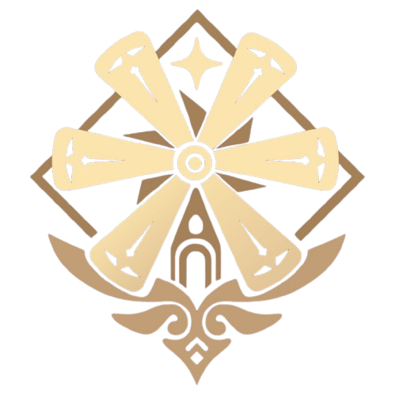
MONDSTADT
The Nation of Freedom
A City of Wind and Song in the Northeast of Teyvat. Where dandelions drift across open skies and freedom flows like the breeze, Mondstadt stands under the gentle protection of its Anemo Archon. Among cathedral bells and knights in shining armor, the people live unbound, guided by the winds of liberty.
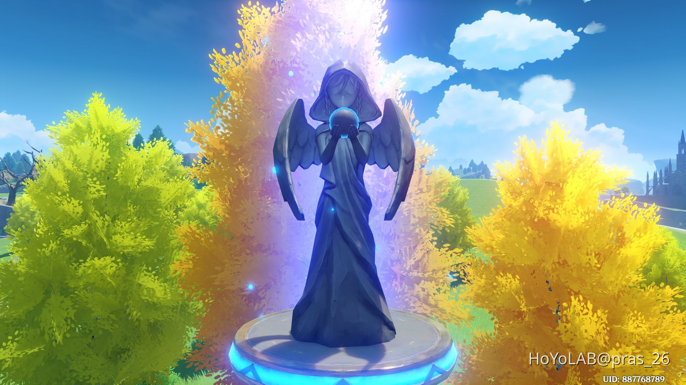
Statue of The Seven – Mondstadt
The Statue of The Seven in Mondstadt is a sacred monument devoted to the Anemo Archon, Barbatos. Carved in elegant stone with wings outstretched toward the heavens, travelers who approach the statue can resonate with the power of Anemo and restore their strength.

Mondstadt Cathedral Plaza
Rising gracefully before the grand cathedral of Mondstadt, the central plaza stands as a gathering place for citizens. With its elegant architecture and peaceful atmosphere, it represents the harmony between faith and freedom in this wind-blessed city.

Venti – Anemo Archon
Venti is the wandering bard of Mondstadt and the Anemo Archon who sings of freedom beneath open skies. With his lyre in hand and a gentle smile, he carries the power of Anemo, summoning swirling winds that dance like dandelion seeds in the breeze.
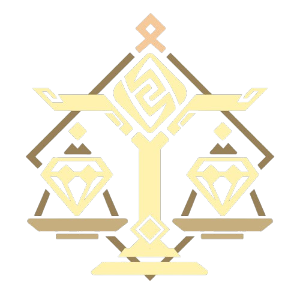
LIYUE
The Nation of Contracts
A Harbor of Stone Rising from the Eastern Seas. Surrounded by towering mountains and glowing lanterns, Liyue thrives on trade, tradition, and unbreakable contracts. Beneath the watchful gaze of its Geo Archon, merchants and adepti shape a land where every promise is written in stone.
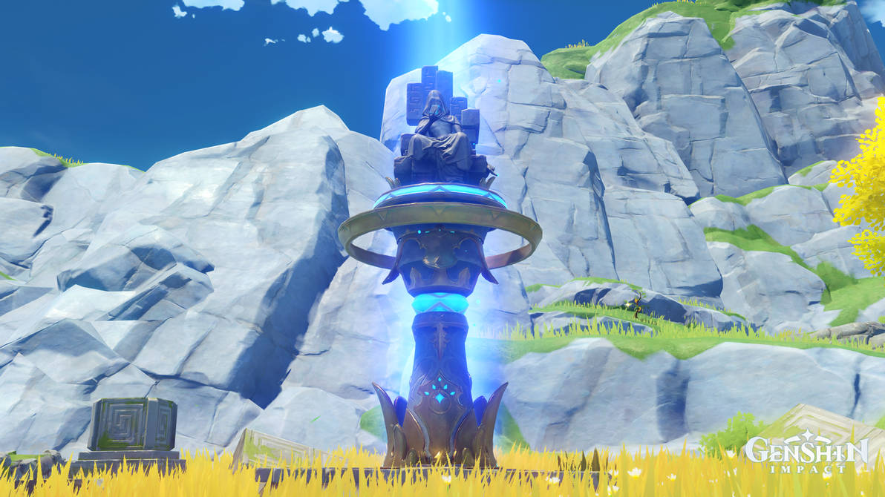
Liyue – Geo Statue of The Seven
Carved in solid stone and rooted firmly among towering peaks, Liyue's statue honors the Geo Archon Rex Lapis. It reflects stability, contracts, and enduring strength. Geo energy flows through those who resonate with it.
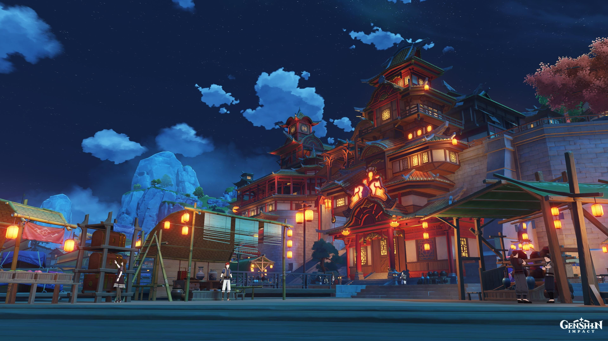
Liyue Harbor
The bustling port city of Liyue Harbor sits at the heart of commerce in Teyvat. With its towering architecture built into mountainsides and lantern-lit streets filled with merchants, this harbor represents prosperity built on the foundation of contracts and tradition.
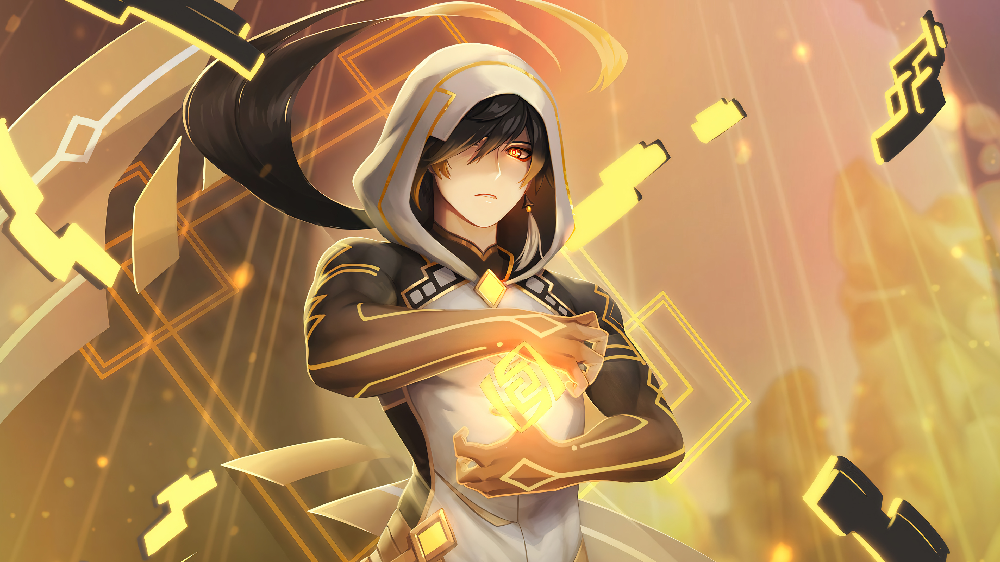
Zhongli – Geo Archon
Zhongli is a refined consultant at the Wangsheng Funeral Parlor and the Geo Archon Rex Lapis. With his vast knowledge of history and culture, he embodies the wisdom of millennia. Wielding the power of Geo, he creates shields of stone and pillars that stand unshakeable.
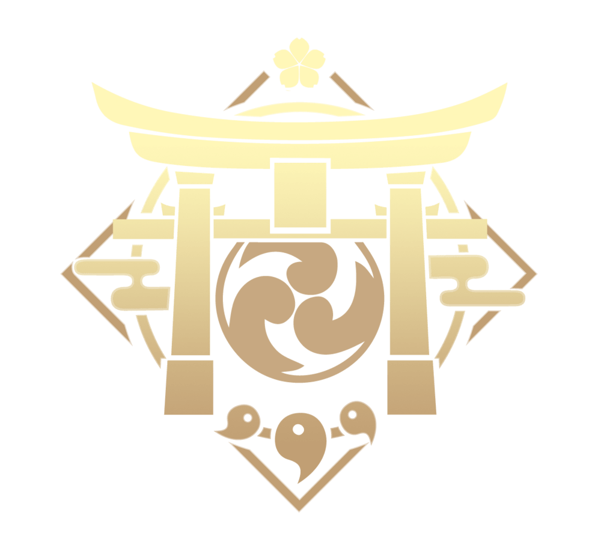
Inazuma
The Nation of Eternity
An Isolated Archipelago Shrouded in Lightning. Across storm-swept islands and beneath the glow of sacred sakura, Inazuma pursues an unchanging eternity. Under the strict rule of its Electro Archon, this nation balances between timeless tradition and the desire for change.
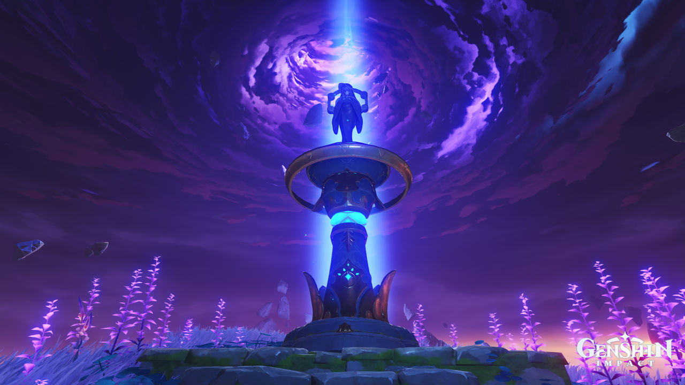
Inazuma – Electro Statue of The Seven
Bathed in violet lightning, Inazuma's statue represents the pursuit of eternity under the rule of the Electro Archon Raiden Shogun. Surrounded by storm and sakura petals, it grants travelers the power of Electro.
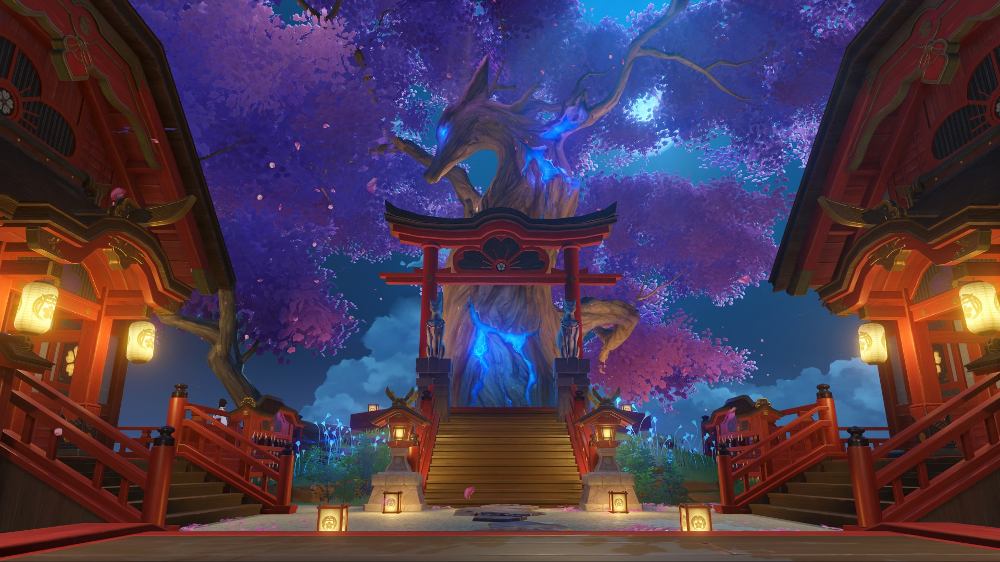
Sacred Sakura
The Sacred Sakura stands as an ancient guardian over Inazuma, its roots reaching deep into the earth. Glowing with ethereal energy and blooming eternally, this magnificent tree protects the islands and serves as a symbol of Inazuma's enduring spirit.

Raiden Shogun – Electro Archon
The Raiden Shogun is the supreme ruler of Inazuma and the Electro Archon who pursues eternity with unwavering resolve. Wielding her blade with divine precision, she commands the power of lightning itself, striking down all that threatens her eternal vision.
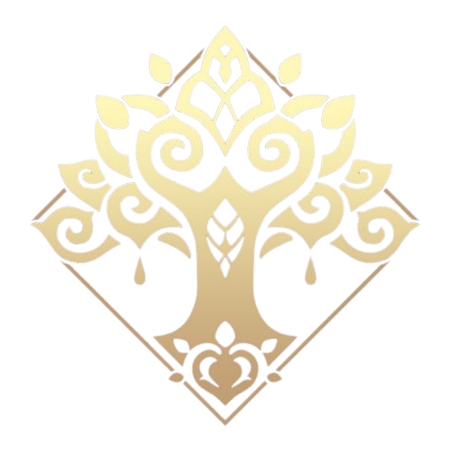
Sumeru
The Nation of Wisdom
A Realm Where Forest Meets Desert in the West. From lush rainforests to golden sands, Sumeru is a land devoted to knowledge and discovery. Scholars of the Akademiya seek truth in every corner, guided by the quiet wisdom of their Dendro Archon.
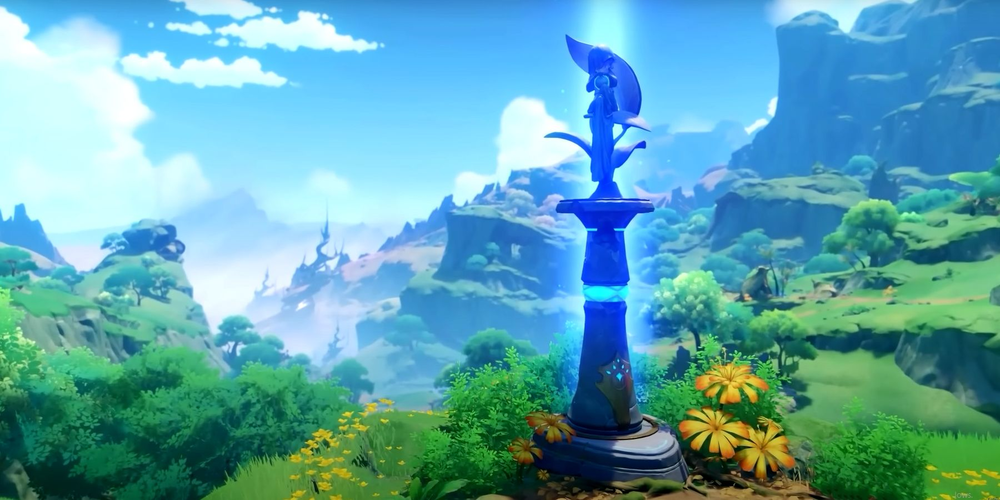
Sumeru – Dendro Statue of The Seven
Hidden among lush forests and vast deserts, Sumeru's statue honors the Dendro Archon Nahida. Surrounded by nature's vitality, it embodies wisdom and growth, allowing travelers to resonate with Dendro energy.
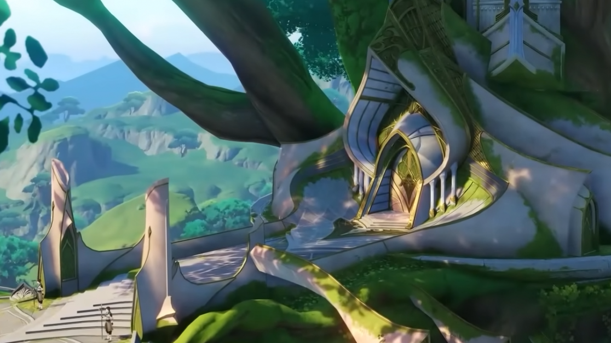
Sumeru City
Built within the embrace of a massive divine tree, Sumeru City is the heart of wisdom and learning in Teyvat. Home to the prestigious Akademiya, this multi-layered city combines natural beauty with architectural marvels, where scholars pursue knowledge beneath verdant canopies.
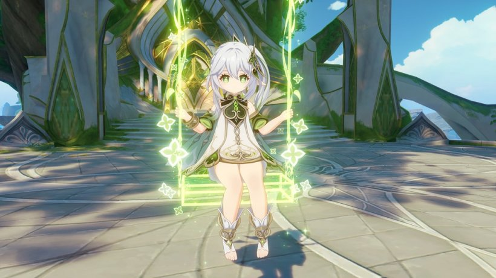
Nahida – Dendro Archon
Nahida is the gentle Dendro Archon and God of Wisdom who protects Sumeru with her vast knowledge and compassion. Despite her small stature, she possesses profound understanding of the world and wields Dendro power to nurture growth and reveal hidden truths.
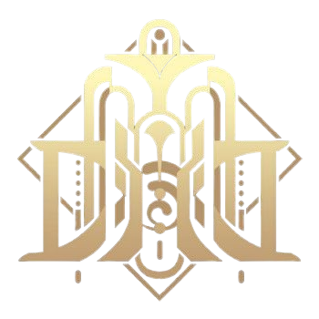
Fontaine
The Nation of Justice
A Nation of Glamour and Performance Built Above the Waters. Where opera houses echo with dramatic performances and trials become grand spectacles, Fontaine embodies justice and elegance. Under the rule of its Hydro Archon, every case is judged and every story unfolds beneath crystalline waters.

Fontaine – Hydro Statue of The Seven
Elegant and refined, Fontaine's statue stands as a symbol of justice and flowing waters under the Hydro Archon Furina. It glows with aquatic brilliance, granting Hydro resonance to travelers.
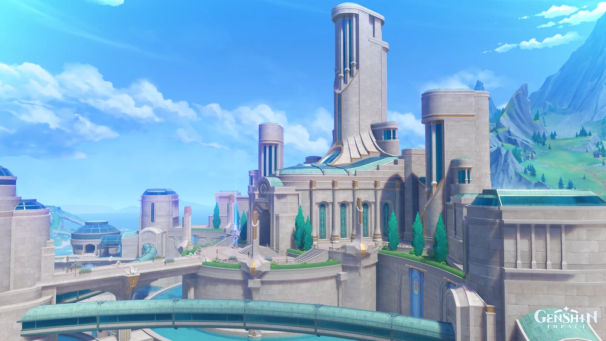
Court of Fontaine
The magnificent Court of Fontaine serves as both the seat of justice and a grand theater for the nation. With its ornate architecture and mechanical innovations, this courthouse transforms trials into performances where truth and spectacle intertwine beneath the watchful eyes of its citizens.

Furina – Hydro Archon
Furina is the charismatic Hydro Archon who presides over Fontaine's grand trials with theatrical flair and dramatic presence. As the God of Justice, she commands the power of Hydro to deliver verdicts and spectacles that captivate all who witness her performances.
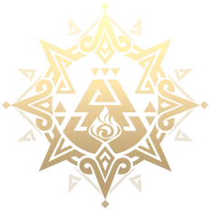
Natlan
The Nation of War
A Land of Volcanic Passion and Tribal Warriors. Where flames dance across ancient ruins and hot springs bubble from the earth, Natlan is a nation forged in battle and bound by honor. Under the guidance of its Pyro Archon, tribes compete and cooperate, their spirits burning as bright as the sacred flame.
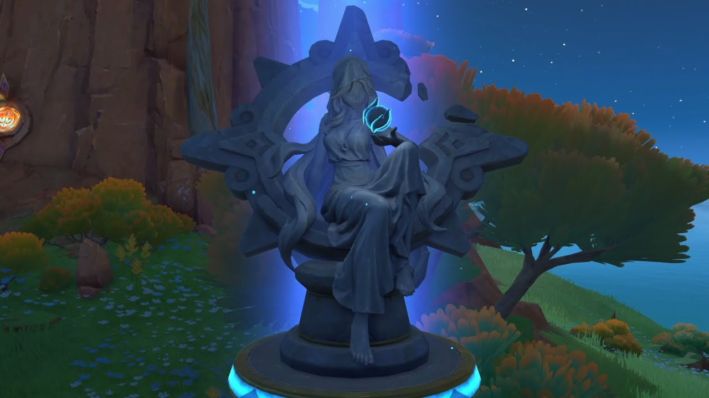
Natlan – Pyro Statue of The Seven
Forged in the spirit of flame and passion, Natlan's statue is dedicated to the Pyro Archon. Set against volcanic lands, it burns with fierce determination, bestowing the power of Pyro upon those who seek it.
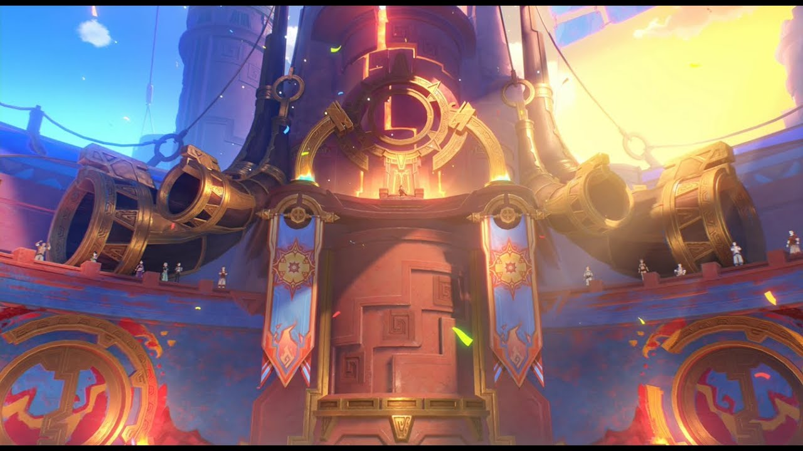
Stadium of the Sacred Flame
The grand Stadium of the Sacred Flame stands as the heart of Natlan's warrior culture. Here, tribes gather to compete in honorable combat and celebrate their heritage, with the eternal flame burning bright as a testament to courage and the indomitable spirit of war.

Mavuika – Pyro Archon
Mavuika is the fierce Pyro Archon and leader of Natlan who embodies the warrior spirit of her people. With flames that burn with righteous fury and determination, she stands at the forefront of battle, protecting her nation and inspiring warriors to fight with honor.
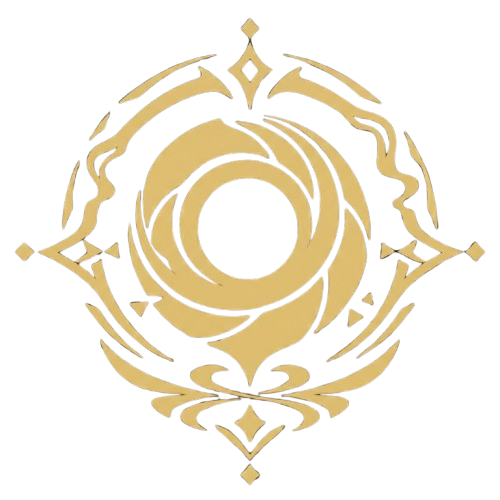
Nod-Krai
The Moon-Blessed Land
The moon-blessed land located in the northwestern regions of Teyvat. Follow the silver thread spun by the new moon, traverse biting gales and desolate tundras as the snow-kissed lakes, fractured like mirrors, reflect their ageless, glacial radiance.

Statues of the New Moon
Statues of the New Moon are statues of Kuutar found in Nod-Krai. Created by the Frostmoon Scions, they stand as ancient monuments in the frozen landscape. The Fatui have built metal cages over some of them in an attempt to harness their power.

Frozen Tundra
The vast frozen tundra of Nod-Krai stretches endlessly under pale moonlight, where glacial lakes mirror the stars above. This desolate yet beautiful landscape holds ancient secrets beneath its icy surface, protected by the eternal winter's embrace.

Columbina – Harbinger
Columbina is the enigmatic Third of the Eleven Fatui Harbingers, known for her angelic appearance and mysterious nature. With her eyes perpetually closed and a voice that echoes with otherworldly beauty, she carries secrets that even her fellow Harbingers fear to uncover.